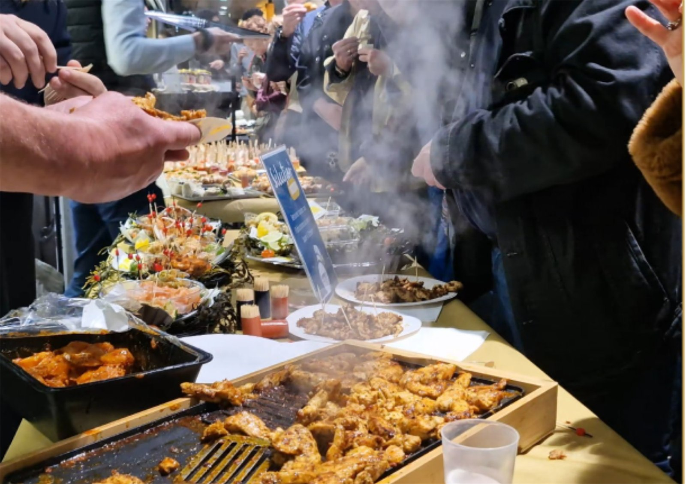
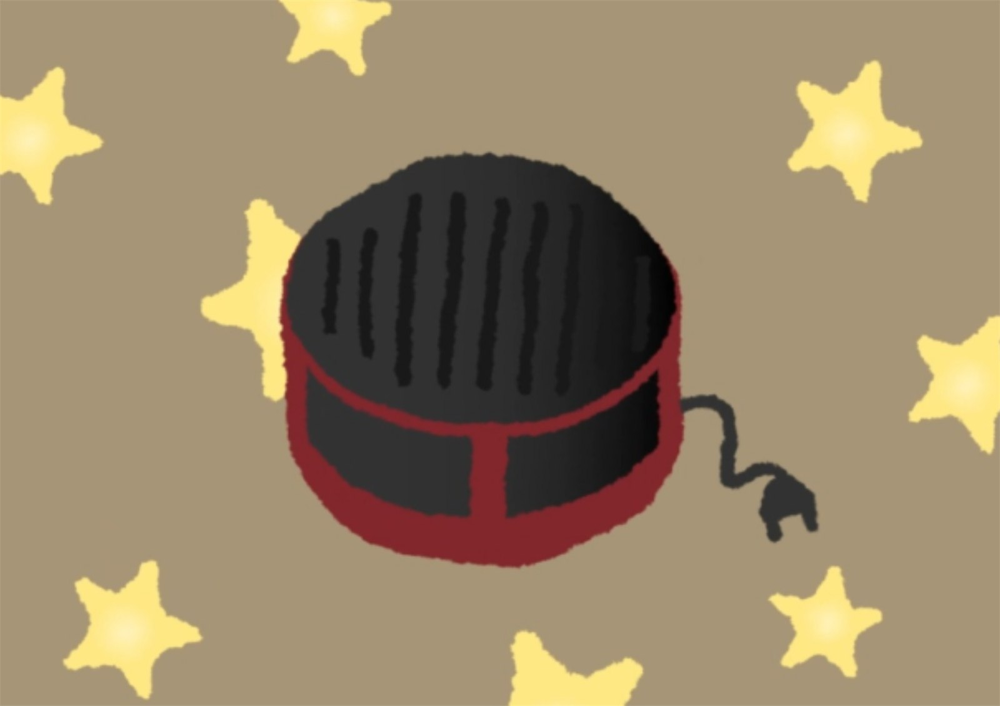
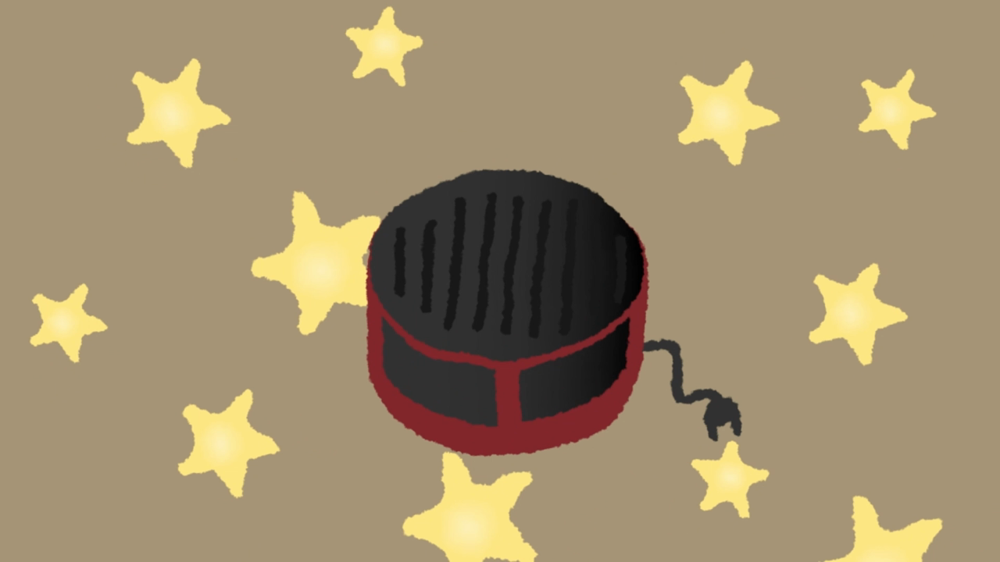
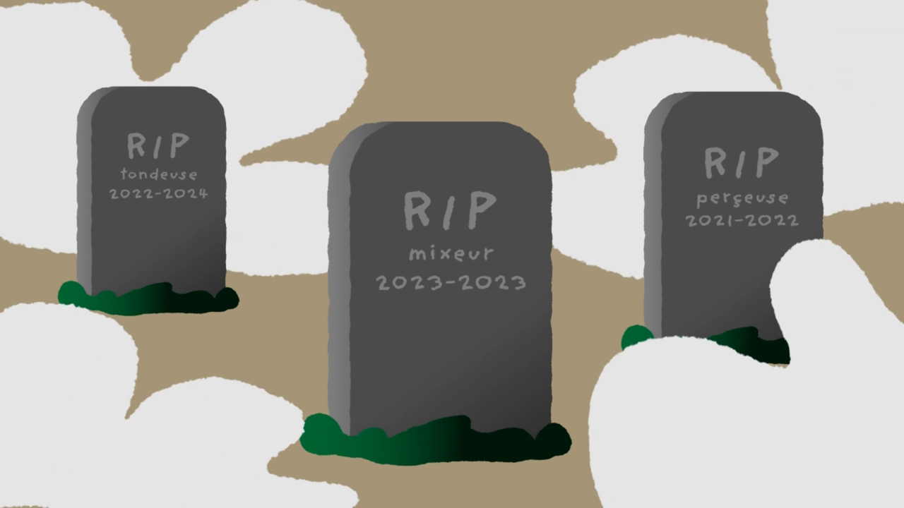
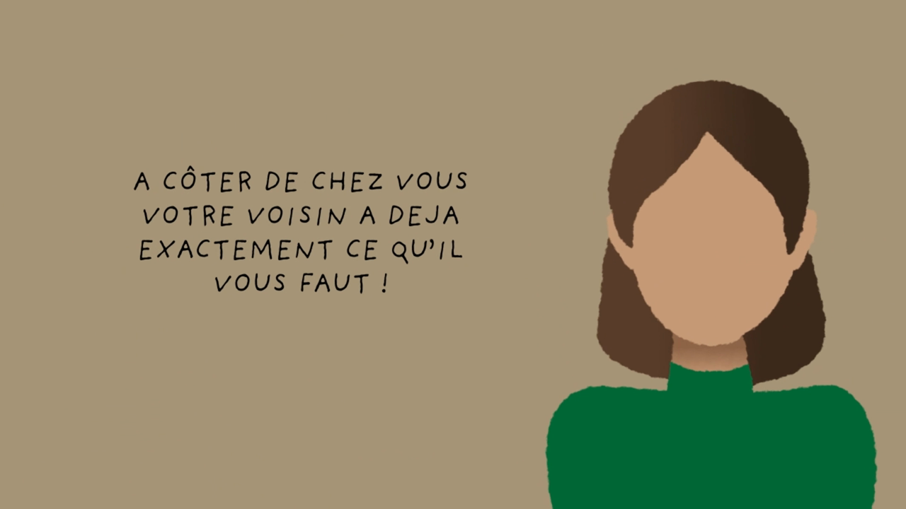
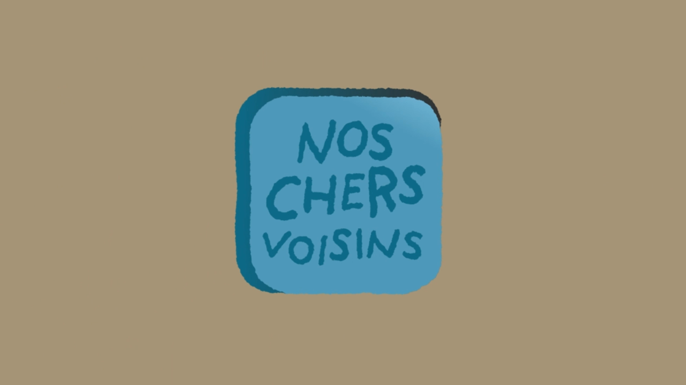

← Tous les projets
Vidéo et motion
Nos Chers Voisins
Emprunter plutôt qu'acheter
Une application inventée pour emprunter à ses voisins ce qu'on n'utilise qu'une fois. Illustrations dessinées sur Illustrator, animation et montage sur After Effects.

Le brief
Vidéo promotionnelle en motion design
Réaliser une vidéo en motion design sur After Effects pour une marque ou une application fictive. Le sujet était libre : il fallait donc d'abord inventer quelque chose à raconter, avant même de penser à l'animation.
Tout en motion
Pas de prise de vue réelle : chaque plan est dessiné puis animé.
Une marque à inventer
Le concept, le nom, le logo et le ton sont à construire de zéro.
Court et clair
Une idée par plan, pour que le message passe en une trentaine de secondes.
Le concept
L'appareil à raclette qui dort dans le placard
Nos Chers Voisins est une application pour emprunter à ses voisins, au lieu d'acheter un produit qui ne servira qu'une seule fois. L'appareil à raclette sorti un soir d'hiver, les outils de jardinage utilisés deux week-ends dans l'année, le petit électroménager acheté pour une recette. Autant d'objets qui existent déjà à quelques mètres de chez soi.
La vidéo raconte ça sans détour : d'abord l'objet, puis le cimetière des appareils morts trop tôt, une tondeuse, un mixeur, une perceuse, avec leurs dates gravées sur les pierres tombales. Puis la solution, portée par des voisins qui se répondent d'un plan à l'autre : emprunter, économiser, se rencontrer.
La fabrication
Dessiner chaque plan, puis le faire bouger
Les visuels ont été dessinés sur Illustrator : les objets, les personnages et le logo. Une palette réduite, un fond kaki tenu du début à la fin, des aplats sans dégradé. Les fichiers sont ensuite passés sur After Effects, où chaque calque est animé séparément et où les textes sont écrits directement, au rythme de l'animation.
Outils






Le résultat
La vidéo
Trente-quatre secondes, du constat à la solution, entièrement animées sur After Effects.
Le mot de la fin
Ce que le projet m'a appris
Le montage et les effets sur After Effects. C'est le projet qui m'a fait entrer vraiment dans le logiciel : découper une illustration en calques pour pouvoir les animer un par un, régler les vitesses, et enchaîner les plans pour que la vidéo garde son rythme du début à la fin.
Projet suivant